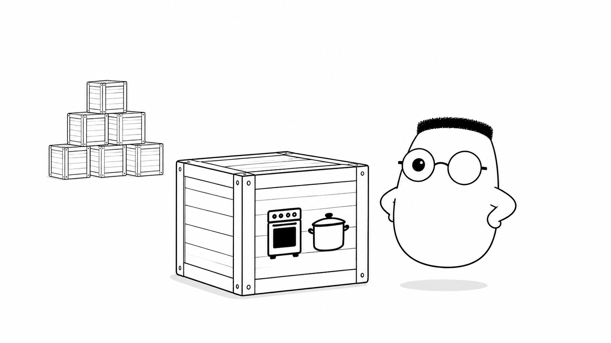
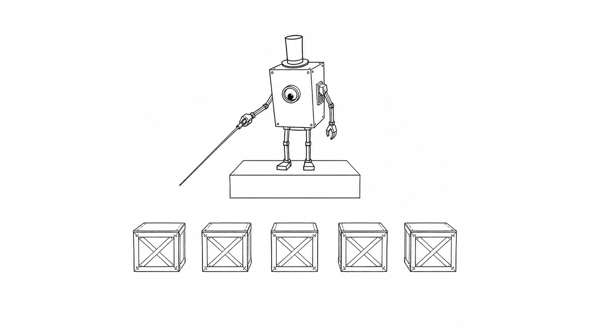
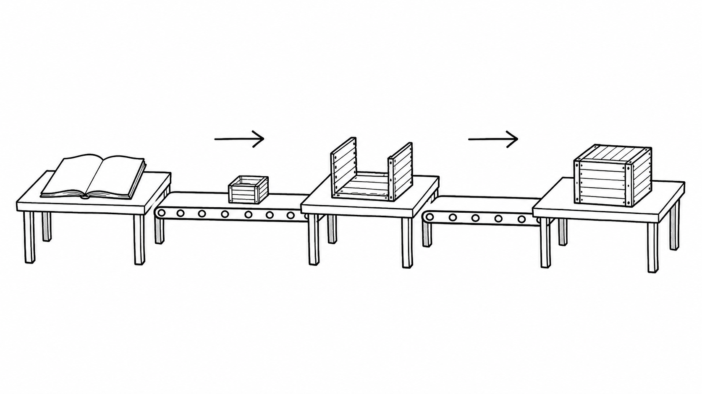

Masalah sehari-hari
container memecahkan keluhan, "Di dapur lamaku resepnya jadi, tetapi di cabang ini tidak." Tanpa container, tim harus memasang alat, memilih versi library, dan mengatur environment yang sama di setiap mesin. Satu perbedaan kecil dapat membuat aplikasi gagal berjalan.
Analogi Kuka
Kuka membayangkan sebuah dapur mini yang sudah dirakit di dalam peti. Resep, alat, dan bahan kering ikut dikunci di sana. Saat peti tiba di cabang mana pun, isinya dapat mulai memasak dengan cara yang sama.
Satu peti mudah dikirim. Puluhan peti butuh orang yang menghitung, memeriksa, dan mengganti peti yang rusak. Di situlah manajer pusat membantu dapur.
Peta istilah peti
Peti yang sedang berjalan adalah container. Container vs mesin virtual berarti membandingkan dapur mini dengan gedung baru yang lengkap. image adalah cetak biru peti yang dapat dirakit berulang kali. Layer adalah susunan kotak yang dapat dipakai bersama. Union filesystem membuat susunan itu terlihat sebagai satu isi.
Dockerfile adalah resep untuk merakit image. Multi-stage build memakai dapur perakitan yang ramai, lalu membawa hasil bersih saja ke peti akhir. Optimasi image dan layer caching memakai kembali kotak yang tidak berubah agar perakitan lebih cepat.
Networking adalah jendela pesanan antarpeti. Volume adalah laci bahan yang berada di luar peti supaya data penting tidak hilang saat peti diganti. Docker Compose adalah satu daftar untuk menjalankan beberapa peti bersama.
Arsitektur Kubernetes terdiri dari manajer pusat dan mesin-mesin tempat peti berjalan. pod adalah unit kerja terkecil, biasanya berisi satu atau beberapa peti yang selalu bersama. Service memberi satu alamat untuk peti-peti itu, sedangkan ingress menjadi pintu dari tamu.
Config dan secret adalah catatan yang diberikan saat peti mulai bekerja. Environment menunjukkan tempat peti berjalan. Health probe memberi tahu manajer apakah peti sehat. Resource membatasi jatah listrik dan ruang kerja.
Strategi deployment mengatur cara peti baru menggantikan peti lama. GitOps menyimpan keinginan keadaan dapur dalam repository agar perubahan dapat ditinjau dan diterapkan dengan urutan yang jelas.
Ilustrasi

Satu peti membawa lingkungan kerja yang sudah disiapkan. Cabang baru tidak perlu merakit dapur dari awal. Ia cukup menerima peti dan menjalankannya.
Penjelasan konsep
Container mengisolasi proses dan isi yang dibutuhkan aplikasi. Ia bukan mesin baru yang lengkap. Ia lebih ringan karena berbagi kernel dengan mesin tempatnya berjalan. Yang dikirim adalah paket kerja yang konsisten, bukan daftar langkah pemasangan untuk setiap cabang.
Lima puluh peti tidak mungkin diawasi dengan tangan. Manajer pusat menyimpan keadaan yang diinginkan, misalnya jumlah peti yang harus aktif. Ia menempatkan peti pada mesin yang tersedia dan membuat pengganti saat ada peti yang berhenti. Inilah alasan orkestrasi dibutuhkan.

deployment menyatakan peti seperti apa yang harus berjalan dan berapa jumlahnya. ReplicaSet membantu menjaga jumlah peti identik tetap sesuai keinginan. Jika satu peti mati, manajer membuat peti pengganti tanpa menunggu orang datang membawa alat.
Saat tamu bertambah, scaling menambah jumlah peti yang melayani. Saat resep berubah, rollout mengganti peti lama secara bertahap. Sebagian peti lama tetap melayani tamu ketika peti baru diperiksa. Cabang tidak perlu tutup hanya karena resep diperbarui.
CI/CD menghubungkan perubahan resep dengan pengiriman peti. Pipeline menjalankan pemeriksaan, merakit image, memberi tag, dan mengirimkannya ke registry. Setelah itu, manajer pusat menerima versi yang baru. Pengiriman menjadi langkah yang bisa diulang, bukan pekerjaan angkut manual.

Alur ini memisahkan pembuatan dari pengoperasian. Tim memperbaiki resep dan pipeline. Manajer pusat menjaga peti yang sudah diterima tetap tersedia untuk tamu.
Diagram alur
Resep berubah dan pipeline merakit peti baru. Registry menyimpan peti itu. Manajer pusat mengganti peti lama satu per satu. Tamu tetap mendapat layanan selama perubahan berlangsung.
Contoh mini
resep berubah -> peti baru dirakit peti baru diuji -> manajer menerima manajer ganti satu per satu cabang tetap buka
Kartu pos ini merangkum deployment bertahap. Peti lama tidak dibuang serentak. Peti baru masuk setelah siap, sementara cabang tetap melayani tamu.
Ringkasan
- Container mengemas aplikasi dan kebutuhan kerjanya agar hasilnya konsisten di banyak mesin.
- Image menjadi cetak biru untuk merakit container yang sama berulang kali.
- Orkestrasi membantu mengawasi banyak container dan mengganti yang berhenti.
- Deployment dan ReplicaSet menjaga jumlah peti identik sesuai keadaan yang diinginkan.
- Scaling menambah peti saat tamu ramai. Rollout mengganti peti bertahap saat resep berubah.
- Pipeline CI/CD menguji, merakit, dan mengirim peti ke registry secara otomatis.
- Tamu tetap terlayani karena peti lama tidak diganti semuanya dalam satu waktu.
Pertanyaan pemahaman
- Apa yang diselesaikan peti (container) soal "di dapur lamaku jadi"?
- Apa tugas manajer pusat (Kubernetes) terhadap lima puluh peti?
- Apa yang dikerjakan pipeline CI/CD setelah resep berubah?
Mau lebih dalam
Versi teknis membahas perintah Docker, resource Kubernetes, dan contoh pipeline yang dapat dijalankan.
Belum dibahas di sini
Crib-sheet produksi, konfigurasi lengkap, dan contoh kode tersedia di versi teknis.